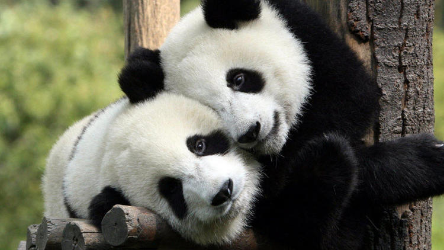

NESLİ TÜKENMEKTE OLAN HAYVANLAR
PANDA

Dev pandalar nesli tükenme tehlikesiyle karşı karşıya bulunmuştur. Ancak onlarca yıl süren koruma çalışmaları sonuç verdi ve Çin'de sayıları yeniden artmaya başlayan dev pandalar,nesli tükenmekte olan hayvanlar listesinden çıkarıldı. Yetişkin pandaların sayısı, 1864 ulaştı. Yavru pandaların sayısı ise tam olarak bilinmiyor ancak yaklaşık 200 olduğu tahmin ediliyor.
KUTUP AYISI

Kutup bölgesinin bu efsanevi canlısı, izinsiz avlanma ve kutuplardaki buzulların erimeye başlaması ile tehdit altında bulunmaktadır.Sayıları her geçen gün azalan kutup ayılarının yirmi beş bin civarında olduğu tahmin edilkmektedir.